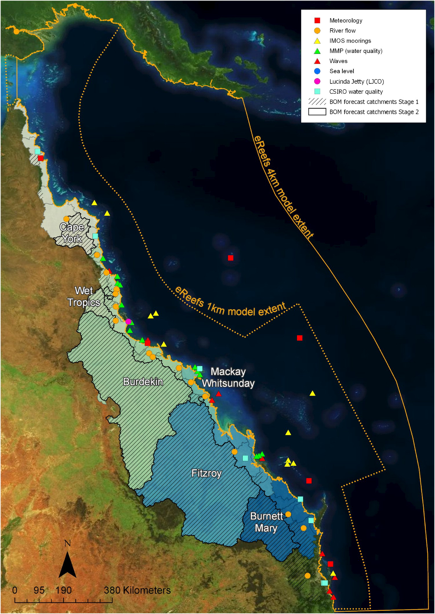

eReefs overview
Introduction to eReefs
A gentle introduction to eReefs — what it is and how to use it.
What is eReefs?
The Great Barrier Reef (the Reef) is the largest coral reef system on earth, covering an area of about 350,000 km\(^2\) off the coast of Queensland, Australia. It is an ecosystem of immense complexity, with a myriad of physical, chemical and biological processes interacting through time to shape the reef which we see today and into the future.
Tracking the health of the Reef has become increasingly important as the cumulative impacts of a range of stressors intensify under a changing climate and jeopardize the future of the Reef as we know it. While the Reef’s great economic, cultural and social value does fuel a considerable amount of research and investment, its shear size means that observations of its condition are relatively few and far between. eReefs aims to solve this problem by using computer modelling to simulate some of the key processes shaping the Reef — from the catchments, to the rivers and estuaries, to the reef lagoon, reef matrix and open ocean — to better understand the ecosystem as a whole and monitor its health in (near) real-time.
Put simply, eReefs is an information platform which takes data from a wide range of sources and passes it through a series of computer models to get predictions across a number of key attributes of the Great Barrier Reef, such as water temperature, water chemistry, and nutrient and sediment loads. These predictions are routinely generated across the entire extent of the Great Barrier Reef, in near-real-time. The end result is a collection of datasets which are, essentially, snapshots of the Reef’s condition through time. These datasets are the core output of eReefs, with a number of other data products, visualisations, and services built upon them.
A simplified overview of the eReefs information platform is shown in Figure 1.
The eReefs Platform
eReefs is often described as an ‘information platform’ to capture the wide range of information services which can be built upon it. Some examples of these services, along with the different elements which make up the eReefs platform, are shown in Figure 2.

Many different Research Components are used to transform input data into a range of data products. These are mostly computer models (more specifically, numerical models), and include:
Ocean Colour - An optical model which uses satellite imagery to infer the optical properties, i.e. colour, of the waters in the Great Barrier Reef lagoon. The colour of the water actually contains a lot of information on water quality, including things like sediment loads and types, the location of river plumes and phytoplankton blooms, and water circulation structures.
Regional Models - These are the core of the eReefs platform. They include a hydrodynamic model to predict the physical state of the system, a sediment transport model predicting the fate of suspended fine sediments, and a biogeochemical model for water column and benthic production, water quality and nutrient cycling. These models are run across the entire extent of the Great Barrier Reef, from the coastline to the open ocean, at either 4 km or 1 km resolution.
Relocatable Coastal Models (RECOM) - An automated re-locatable modelling system capable of generating high resolution models of hydrodynamics, waves, sediment transport and biogeochemistry, nested within the 4 km or 1 km regional models. Essentially, RECOM implements the regional models over a smaller, user-defined area with much higher resolution.
Marine Forecasting Models - Provide what is essentially a marine weather forecast, capable of providing short-term predictions of water temperature, flow, mixing and quality, among other things.
Catchment Models - Predict the flow of water entering the catchments via rainfall and exiting into the ocean via rivers, as well as the introduction of sediments and pollutants via run-off.
In Figure 3 we can see the extents of the 4 km and 1 km regional models and the catchment models, along with the locations of the in-field input data streams.

The eReefs Regional Models
The Regional Models are the core of the eReefs platform and include three main models, the:
- Hydrodynamic model - predicts the physical state of the system
- Sediment transport model - predicts the fate of suspended fine sediments
- Biogeochemical model - predicts many attributes of water column and benthic production, water quality and nutrient cycling
These models are supported by a wave model, an optical model, a carbon chemistry and reef processes model, catchment models and data assimilation systems.
Model grids and extents
The models are run using a curvilinear orthogonal grid, where their total spatial extent is divided into many grid cells (a.k.a. pixels) at both 4 km and 1 km resolution; dubbed the GBR4 and GBR1 models, respectively. For each grid cell, the models predict values across a consistent set of reef attributes at a range of depths in the water column.
Both the GBR1 and GBR4 models extend along the Queensland coast from Papua New Guinea to the New South Wales border, and offshore to beyond the continental slope. The 4 km model encompasses some of the Western Coral Sea and the Queensland Plateau, whereas the 1 km model is limited to the shelf regions. The boundaries of both models are shown in Figure 4 along with the grid sizes.

Relocatable Coastal Model (RECOM)
In addition to the 4 km and 1 km resolution models, the eReefs platform also contains a Relocatable Coastal Model (RECOM) which offers higher resolution over smaller, user-defined areas. We do not yet cover the use of RECOM in these tutorials. Learn more about RECOM.
The eReefs Outputs
The core outputs from the eReefs platform are the datasets produced by the Hydrodynamic and Biogeochemical Regional Models. These datasets contain the predicted values across a range of variables for different points in time and three-dimensional space (latitude, longitude and depth in the water column and benthic layers). The datasets are produced routinely in near-real-time, and hindcast into the past. The outputs are available in both 4 km and 1 km resolution. An overview of the different raw model outputs available on the National Computer Infrastructure (NCI) eReefs server is shown in Table 1, the different variables contained in each model is presented in Model output variables.
Available outputs
| Model | Version | Resolution | Type | Date from | Date to | Time interval |
|---|---|---|---|---|---|---|
| Hydrodynamic GBR1 | 2.0 | 1 km | Near-real-time & hindcast | December 2014 | Present | Hourly |
| Hydrodynamic GBR4 | 2.0 | 4 km | Near-real-time & hindcast | September 2010 | Present | Hourly |
| Biogeochemical GBR1 | 3.2 | 1 km | Near-real-time | October 2019 | Present | Daily |
| Biogeochemical GBR4 | 3.1 | 4 km | Near-real-time | October 2019 | Present | Daily |
| Biogeochemical GBR4 Baseline | 3.1 | 4 km | Hindcast | 2010-12-01 | 2019-04-30 | Daily |
| Biogeochemical GBR4 Pre-industrial | 3.1 | 4 km | Hindcast | 2010-12-01 | 2019-04-30 | Daily |
| Biogeochemical GBR4 Reduced loads | 3.1 | 4 km | Hindcast | 2010-12-01 | 2019-04-30 | Daily |
Output variables
Download the model variables list
You can download the below lists of the model variables in .xlsx format here.
Lists currently incomplete
The below lists of model variables are not yet complete. While, for the Hydrodynamic model, all the variables are listed, some are missing descriptions. For the Biogeochemical model, which contains over 350 variables, not all model variables are listed. We aim to complete this list in time, as well as specify which variables are included in the AIMS aggregated model outputs (see Accessing model data below).
Accessing outputs
The eReefs Hydrodynamic and Biogeochemical model outputs are available in two types:
Raw outputs - Unprocessed model outputs published by the Commonwealth Scientific and Industrial Research Organisation (CSIRO) on the National Computational Infrastructure (NCI) server. They contain the model outputs at hourly (Hydrodynamic) or daily (Biogeochemical) time intervals.
Aggregated outputs - Daily, monthly, and yearly aggregated model outputs processed and published by the Australian Institute of Marine Science (AIMS) on the AIMS eReefs THREDDS server. They contain aggregated model outputs whereby, for a given variable and model grid cell, the raw model output values are collected and processed to get the either the daily, monthly or yearly mean value.
The output datasets can be accessed in a range of different ways — these are listed below.

NCI Server
Raw outputs
NetCDF file format
OPeNDAP, HTTPS, WMS

AIMS THREDDS Server
Aggregated outputs
NetCDF file format
OPeNDAP, HTTPS, WMS

AIMS Data Extraction Tool
Raw and Aggregated outputs
Point-and-click user interface
CSV file format

Data Brokering API
Raw outputs

ereefs R package
Raw outputs
R scripting interface
Using eReefs Data
Applications
Reef management challenges for which the eReefs modelling suite has application are numerous and include prediction of coral bleaching hotspots, impacts of ocean acidification on coral calcification, catchment impacts on reef health (sedimentation issues, eutrophication), crown of thorns starfish (COTS) infestations, hypoxia, management of dredging, shipping and port related activities, fisheries management, search and rescue, larval connectivity and prediction of impacts of floods or extreme weather events on marine systems. Since the modelling package operates routinely in near real-time, emergent events such as floods, dredge plumes, phytoplankton blooms, cyclones, vessel groundings, bleaching events etc. may be investigated and responded to in a timely manner.
Limitations
The eReefs Hydrodynamic and Biogeochemical (BGC) datasets are based on spatial and temporal models, and as such only provide estimates of the environmental conditions. The data does not come from in-water measurements and thus will have a spatially varying level of error in the modelled values.
For further information on model accuracy and validation, see the eReefs research paper.
A technical assessment of the skill level of the BGC version 3.1 model shows that the absolute accuracy of the BGC model varies significantly with variable and location. As a result care should be taken to ensure the model is fit-for-purpose and in general BGC results should used in combination with second sources of information when making inferences or management decisions.
The modelled scenarios run for version 3.1 of the BGC model were developed for the purpose of comparing catchment run off effect comparison. As such they were driven with historic weather and river flow boundary conditions, but the sediment and nutrient loads were based on the results of the 2019 Source Catchment modelling. In this catchment modelling the land use is static over the simulation run. This means that for the ‘Baseline’ scenario this uses estimated land use from 2019 applied over all years (2010 - 2019). As a result improvements in land practices are effectively back dated to start of the simulation (2010). This results in early years in the simulation having slightly lower nutrient and sediment loads then actually happened. The BGC modelling team indicated this approach is likely to introduce small additional errors in places where the land practices have improved significantly, but are likely to be smaller than the inherent errors in the model. These errors only apply if the Baseline model data is interpreted as an estimate of historic conditions, rather than the original intended purpose of the scenario comparison.
The wind data used for the Hydrodynamic model is originally from the BOM Access-R weather models. These models capture synoptic winds and some of the features of cyclones, however they do not represent the high speed winds near the eye of cyclones well. For this reason the maximum wind speed aggregations do not capture the peak winds of cyclones.